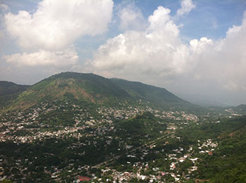

We Got You Covered
If you like to travel and be up to date, we are the solution. We are offering the most current weather information for three southern Idaho cities: Fish Haven, Preston and Soda Springs. With beautiful rivers, landscapes, historic sites, Rodeos, Geyser parks and snow. Southern Idaho is the perfect spot for a gateway. Find adventure, romance, relaxation, amusement and much more. Our page will help you to plan your trip ahead and be mindful of the weather conditions so you can get the most out of your southern Idaho experience.